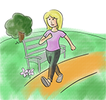

Module: Fatigue and Energy Conservation
Janet L. Poole, PhD, OTR/L, Cindy Mendelson, PhD, RN, Laura Dyas, LSW, LPC, MA, Mary Alore, MBA
Resources
Learning to say NO!
Learning to say NO can be a valuable tool for conserving your energy.
Printout PDFCreating your to-do list
Creating a to-do List every week will benefit you by helping to prioritize and organize your tasks, create better time management, conserve your energy, and manage your scleroderma symptoms.
Printout PDFMy weekly to-do list
Keep track of your tasks and goals with this worksheet.
Printout PDFWeekly schedule
A printable weekly schedule so you can plan rests.
Printout PDFRate your fatigue
A good way to manage your fatigue is to start to learn more about it.
Printout PDFManaging fatigue – Depositing and budgeting energy
Daily range-of-motion and exercise within tolerance
Even a little bit of exercise can go a long way toward keeping your body conditioned. It is important to exercise within your tolerance. Avoid exercises that can harm your joints. For example, walking is easier on your joints than running. Swimming and water exercises are gentle on your joints because the water supports your body and provides a good workout for your muscles, joints, and heart. If active exercise is too stressful, then range-of-motion exercises can help you maintain your joint function. See Exercise module.
Pace activities throughout the day
Just because you used to “do everything” does not mean that you should continue to try to maintain that level of activity.
Think carefully about your daily activities: what must be done, what can be done by others, and what can be set aside for another time. Do not try to do everything at once. This might mean that others in your family will have to take on more responsibilities, which will be an adjustment for your family, as well.
Learn to say no! Use the “Learning to say NO” activity sheet to help you make decisions when someone asks you to do something that you do not think you can do right now.
Use the “Creating Your to-do List“ and “Weekly to-do list” activity sheets (learning activities) to help you prioritize your weekly tasks.
Plan your activities throughout the day, giving yourself set periods to rest. If you become too tired, reprioritize your activities. Avoid the temptation to pack your “good days” with activities. This usually causes you to become more tired in the long run.
Think ahead about when and where you will be able to rest. If you are working around the house, make sure you have time to stop and take it easy. If you are at the office, plan for times to close your door and take a break. If you are going on a trip, think ahead about how you will pace your activities.
Try different types of rest:
- Lie down
- Sit – recline 60°, support arms and legs
- Sleep
- Do a passive or quiet activity, e.g. listen to music
Use the “Weekly schedule“ or “Weekly to-do list“ – remember to plan your rest periods and put them on your schedule.
A serious chronic illness often means that you will need to make changes in your life. Although you may need to think about how to do things differently, rarely does it mean completely giving up activities. However, sometimes you cannot do as much in a day as you would like. Give yourself permission to slow down.
Keeping a daily diary of your activities, your energy level, and your pain can help you identify which activities increase your fatigue and pain and which activities are not as bothersome.
Use the “Rate your fatigue” activity sheet to keep track of your activities and rate your fatigue.